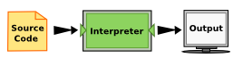
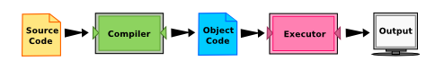

UP & RUNNING WITH PYTHON
SESSION 1
07 . 08 . 2016
USICT
Hello Everyone!
- Welcome to USICT - Python Code Sprint
- We are Hemang & Neelansh
- Let's do some MAGIC.
THE SINGLE MOST IMPORTANT SKILL FOR A COMPUTER SCIENTIST IS
PROBLEM SOLVING
PROBLEM SOLVING MEANS
- The ability to formulate problems,
"Oh Man! Forgot my fork today!"
- Think creatively about solutions,
"Hey there! Do you have a bunch of toothpicks and a rubber band?"
- And express a solution clearly and accurately!
ON THE MENU
- Once upon a time there was no Python.
- Syntax
- Conditionals
- Functions
- Assembling Everything
- Git & GitHub
BEFORE 2000
- Python was not so popular even though work started on it in late 1980s.
- C, C++, Java, C# and blah blah blah.
- A thousand different programming languages taking minutes to write and execute any kind of useable program.
- Seriously, minutes? Are you f*** kidding me?
C++ Hello World
#include < iostream.h >
using namespace std;
void main(){
cout<<"Hello World";
}
Java Hello World
public class HelloWorld{
public static void main(String[] args){
System.out.println("Hello World!");
}
}
Assembler 8051 Hello World
Org 0
mov dptr,#msg
mov R0,#30h
loop:
clr a
movc a,@a+dptr
jz end
mov @R0,a
inc R0
inc dptr
sjmp loop
end:
jmp $
msg:
db 'Hello World",0
All this for printing "Hello World!" on screen !
Hello World in Python
print "Hello World!"
1 Second
TWO THINGS BEFORE WE
START PYTHONING
- How computer interacts with Python?
- DEBUGGING
COMPUTER AND PYTHON
TWO TYPES OF LANGUAGES
- HIGH LEVEL, LOW LEVEL
- LOW - Machine , Assembly
- Computers Understand Only Machine language (0s and 1s)
- So all the high level languages and also even Assembly language is converted to Machine.
COMPUTER AND PYTHON
TWO WAYS HOW EVERYTHING IS
CONVERTED TO MACHINE LANGUAGE
- Source Code -> Interpreter -> Output

- Source Code -> Compiler -> Object Code -> Executer -> Output

- What on earth is Object code?
OKAY! LOT OF TWOs
THREE KINDS OF ERROR TO WATCH OUT
- Syntax Error
- Logical Error (also called Semantics Error)
- Runtime Error (called Exceptions)
LET'S BEGIN PYTHON
INSIDE THE PYTHON FOLDER
- Python 3
- Text Editor or Code Editor
- Codelens
PYTHON SYNTAX
- Variables, Expressions and Statements
- Values and Data Types
- Type conversion functions
- Variables
- Variable Names and Keywords
- Statements and Expressions
- Operators and Operands
- Input
- Order of Operations
RESOURCES
- How to think like a Computer Scientist
- Codelens
- Learn Python the Hard Way
- Python Tutorial by Guido Van Rossum